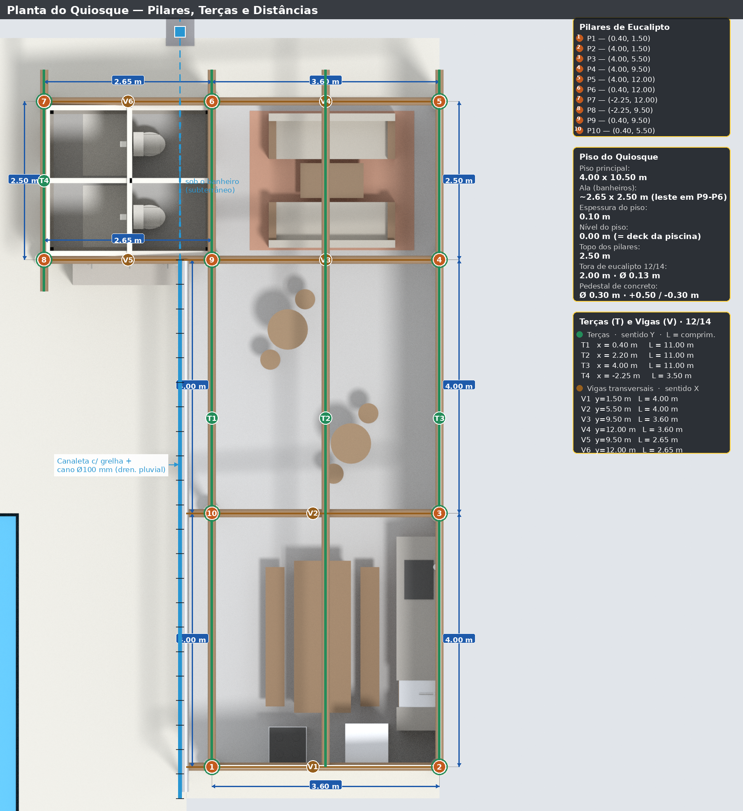
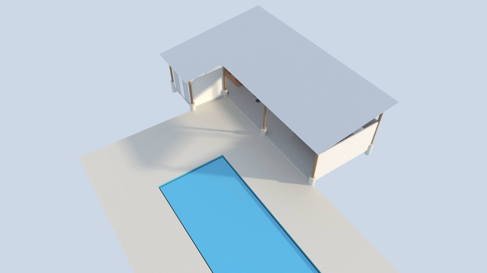

Caderno de obra · página 2 de 6
Especificações Técnicas
Piscina Esmeralda
Dimensões (larg. × compr.)3,70 × 10,50 m
Profundidade1,30 m (rasa) a 1,70 m (funda)
Volume aproximado~54 m³
Centro (x, y)−3,67 ; −0,15 (georreferenciado)
Nível da lâmina d'água−0,10 m do piso
Piso do quiosque
Piso principal4,00 × 10,50 m
Ala (banheiros)~2,65 × 2,50 m
Espessura do piso0,10 m
Radier (piso+calçada)59,38 m² — laje única
Pilares de eucalipto (10 un.)
Bitola12/14 (Ø ~13 cm)
Pedestal de concretoØ 0,30 m ; −0,30 a +0,50 m
Topo (leste, alto)2,60 m sobre pedestal
Topo (oeste, recuada)2,06 m sobre pedestal
Topo (ala, baixo)1,66 m sobre pedestal
Paredes de fechamento
MaterialMuro tendinoso
Corpo principalsul + leste, até o telhado
Banheirosh 2,50 m, verga s/ portas
Área total79,3 m²


